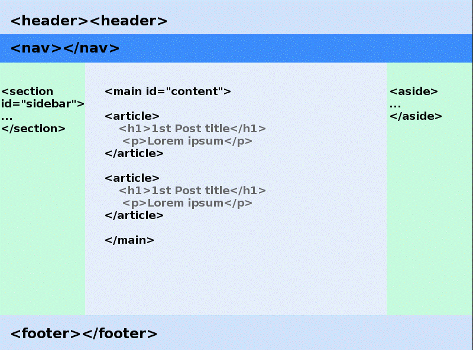
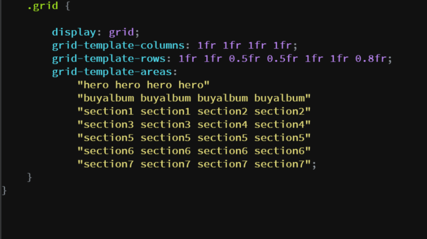
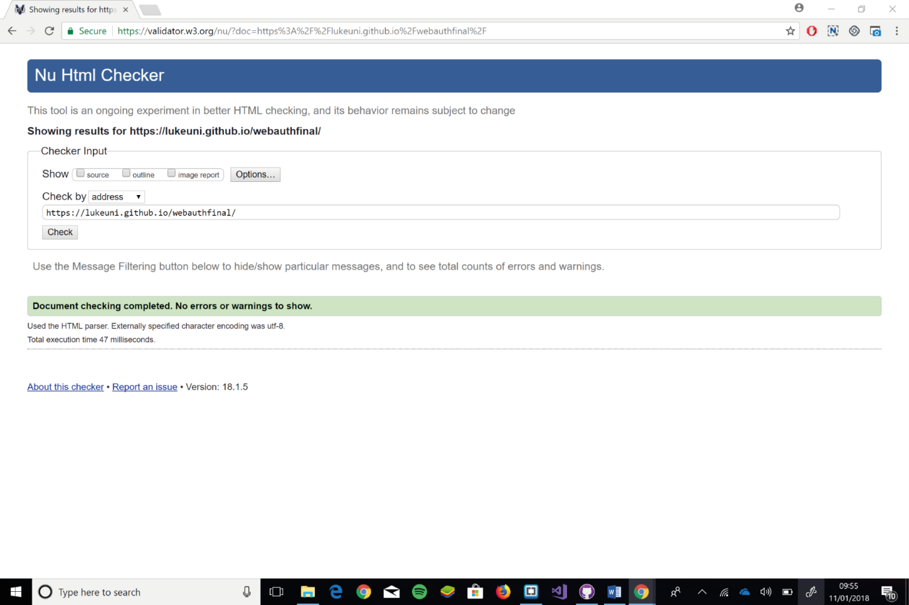

CMP1130M Web Authoring Assessment 1
Luke Heald| ID: 07128492 | 15/12/2017
CMP1130M web authoring assessment was to create a responsive website for a band or brand utilising multimedia, advanced interactions and local storage while ensuring use of appropriate web standards ensuring maximum interoperability also allowing the user to customise or interact with the website in some way. In my report I will discuss how best practice was applied and the current strengths and weaknesses of web standards.
During my websites development modern browsers such as Firefox, Google Chrome and Edge have done a good job at parsing my inexperienced code, however some of my errors were not always caught gracefully and different browsers were not always able to handle my errors in a similar fashion. Using standard, interoperable mark up and stylesheets, on the other hand offers a much greater chance of having ones page handled consistently across different platforms.
HTML has gone through many different iterations progressing from HTML 1.0 to the current iteration HTML 5.0 which is now supported by most browsers. W3C has helped pave the way for fewer compatibility issues by creating a standard across the web, ensuring greater compatibility across different browsers. W3C’s general message is ‘Be smart and future proof’ using a consistent style keeping your code tidy, clean and well-formed. It is now expected that browsers conform to the W3C’s standards as much as possible to ensure unvarying outcomes across different browsers. One of the main advantages of current standards is that they are backwards compatible allowing HTML 5 to support legacy mark-up such as HTML4 whereas previously XHTML 2.0 was not backwards compatible eventually leading to its downfall. W3C also offer a validator which developers can use to check their code is compliant with current web standards and this became an invaluable tool in my sites development and was key in teaching me good practices.
However, this is not always the case, there are times when new developments have been made in the mark-up of HTML which browsers are not quick enough to support, creating some compatibility issues and it could be argued for this reason to use older web specifications to ensure maximum compatibility across the web. This is a problem I faced first hand when deciding to use the CSS grid method which I will discuss in more detail later.
Below are some examples of best practices in web development.
File structure, correct naming conventions and organisation is extremely important. I was guilty of designing in the browser, snatching images online, downloading them and sticking them straight into my code to see what the image looked like. In principle this is ok however there was several occasions in which I forgot to go back and rename my files and didn’t follow a logical organised structure which resulted in me spending 40 minutes renaming and appending my code, something that could have been avoided. If left unchecked this could have resulted in uploading images that weren’t being used making my website less efficient.
While researching best practices I came across the BEM CSS methodology which I tried to incorporate into my naming conventions. BEM method states that it is an easy method for scaling websites, but I personally preferred the readability of this structure over other methods.
The doctype declaration should be in the first line of your HTML. It’s not an HTML tag; it’s an instruction to the web browser about what version of HTML the page is written in.
The title tag should never be omitted, it is rendered on your browser tab and would be bad practice for accessibility should you not use it.
charset='utf-8' will ensure that your page is always viewed correctly.
Keep your layout organised using appropriate sections.
Interoperability was important for me to consider from the very start. I didn’t want to be in a position in which I had to rewrite code or redesign my website to work on smaller devices. I used the Mobile-Frist Design method. This has several benefits such as there being 1.2 billion mobile web users worldwide and 25% of them in America being mobile-only. More than ever before the web is something that we carry in our pockets and as such it should be considered that a potential user of your website may never see your desktop site. According to Eric Schmidt in 2010 Google was now going to take this approach moving forward. In my quest for a mobile first design I stumbled across CSS gird.
CSS grid helped ensure my website performed well across all device sizes and allowed me the freedom to develop a mobile first design. It didn’t matter what device a user used my website would resize appropriately to give the end user the best experience using only one media query. As you can see below the website has a clear easy to understand structure utilizing CSS grid.
Grid doesn’t come without problems some of things I was trying to achieve just hadn’t been well documented yet. There were concerns that it wouldn’t be supported by all browsers but since March 2017 all browsers adopt CSS grid with one or two know bugs such as Safari not yet supporting intrinsic and extrinsic sizing with grid properties such as grid-template-rows.
While developing the site it was important to consider different browser compatibility to ensure a smooth experience for everyone. I tested my website across all major browsers which showed my site worked as it should with all functionality using CSS, HTML, JavaScript and jQuery.
The above examples show the website working across Chrome and Firefox.
As discussed above I ran my website through the validator. Some of the issues raised on the validator were not applicable or were what I considered features and were necessary for the site to function in the way I wanted. However, it was possible to have the site run with no errors.
W3C (2016) HTML 5.1 W3C Recommendation. Available at: https://www.w3.org/TR/html51/introduction.html#html-vs-xhtml (Accessed: 11 December 2017.)
BEM (2016) BEM methodology. Available at: http://getbem.com/naming/ (Accessed: 11 December 2017.)
W3C (2016) Mark-up validation service. Available at: https://validator.w3.org/ (Accessed: 11 December 2017.)
Rachel Andrew (2016) Grid by Example. Available at: https://gridbyexample.com/examples/ (Accessed: 20th November 2017.)
IBM (2002) Understanding web service interoperability. Available at: https://www.ibm.com/developerworks/library/ws-inter/index.html (Accessed: 11 December 2017.)
Google Images (2017) Images. Available at: https://google.com/images (Accessed: 20th November 2017.)